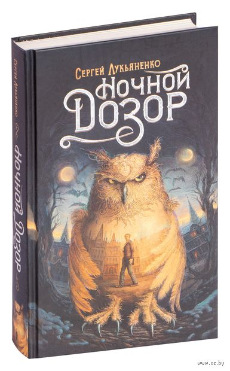
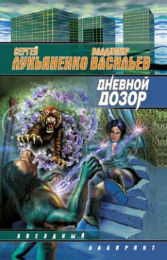
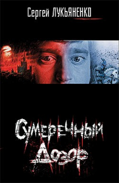

Вселенная «Дозоров» получилась у писателя невероятно удачной: в неё веришь, она затягивает, из неё не хочется возвращаться. И это при том, что мир, придуманный Сергеем Лукьяненко, достаточно жуткий: вампиром здесь может оказаться кто угодно, хоть известный рок-певец, хоть безобидный с виду сосед по лестничной площадке. И все они хотят одного – выпить побольше крови у простых смертных. А ещё здесь есть Иные. С виду они почти не отличаются от обычных людей, но у них есть магические способности и они умеют входить в Сумрак – параллельный мир. Всего «Дозоров» под авторством Лукьяненко вышло шесть, причём писатель обещает, что когда-нибудь напишет и седьмую часть, «Вечный Дозор».
Книга «Ночной дозор» (1998)
Самая первая книга, в которой мы впервые встречаем Антона Городецкого и узнаём о его непростой судьбе.
Книга «Дневной Дозор» (2000)
Из этой книги мы узнаём, что такое Дневной Дозор, и становимся свидетелями трогательной и пронзительной истории любви.
Книга «Сумеречный Дозор» (2003)
Книга начинается с рассказа о человеке, который захотел стать Иным, хотя это казалось невозможным.